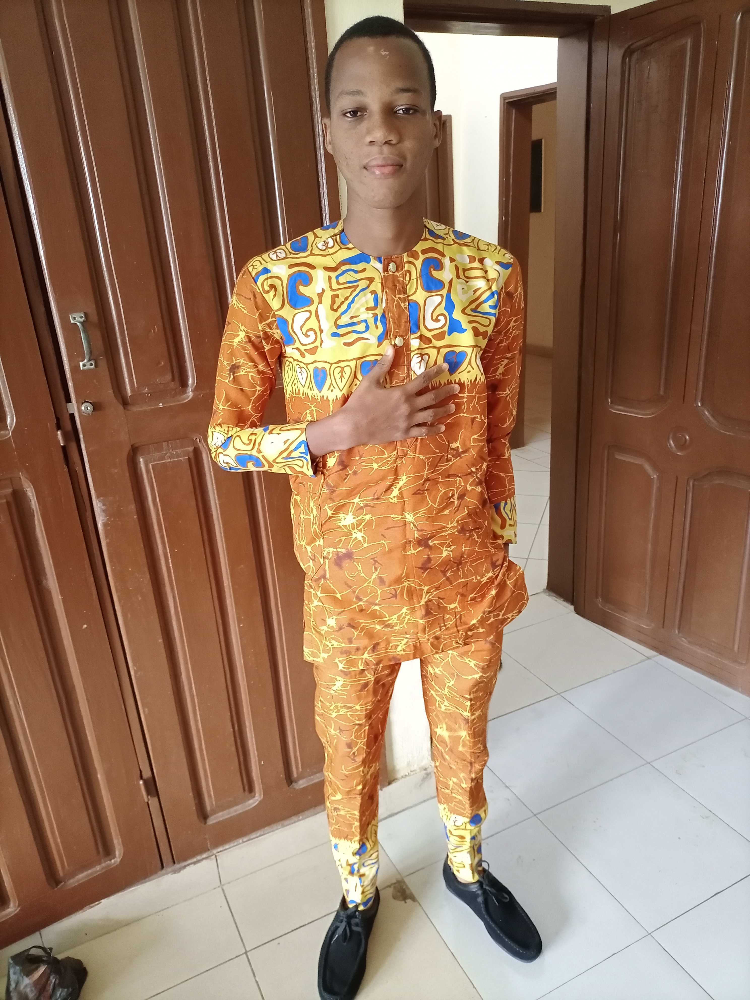

Parcours de KIKI Esther

J'ai commencé la maternelle à l'âge de 2 ans au complexe scolaire La grâce. J'y ai passé également le cours primaire où j'obtint mon CEP. J'ai fais la 6 ème et la 5 ème au complexe Jean Paul II à cotonou. Ensuite J'ai fais la 4 ème et la 3 ème à Sèmè et pour finir j'ai fréquenté le Jardin des Elus de la 2nde en terminal où j'ai obtenu mon diplôme du bac en 2019. Actuellement, je suis etudiante en troisième année de génie informatique et télécommunication à l'Epac.
Parcours de MONTCHO Marcolin

Entré à l'école maternelle à l'age de 4ans, j'ai passé la maternelle et le cours primaire au complexe scolaire notre dame de laurette où j'obtint mon diplome de CEP en 2012. J'ai ensuite passé le cours secondaire au complexe scolaire ste félicité où j'ai obtenu le BEPC et le BAC respectivement en 2016 et 2019. Ce dernier diplôme m'a donc permis d'intégrer l'EPAC (Ecole Polytechnique d'Abomey-Calavi) et actuellement je suis en 3 ème année de génie informatique et télécommunication.